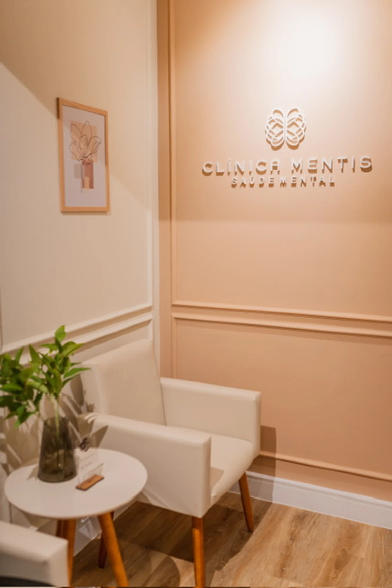
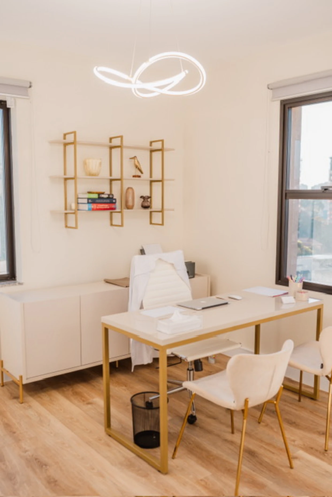
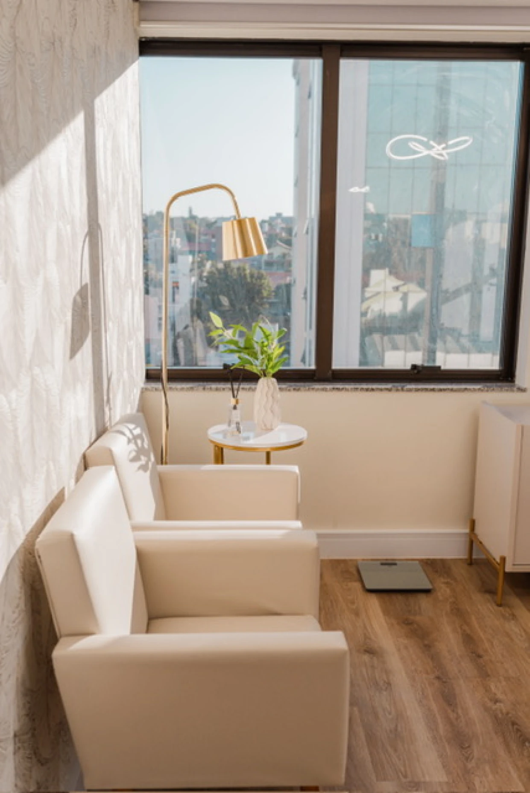

Escuta ativa, presença real e acompanhamento próximo — para que você se sinta cuidado desde a primeira consulta.
Atendimento psiquiátrico para adultos e adolescentes, com o tempo e a atenção que cada caso merece.
Crises frequentes, preocupação constante, medo sem causa aparente ou ataques de pânico que travam sua rotina.
Falta de energia, prazer ou motivação que não passa com o tempo — e que já está afetando trabalho, relacionamentos e qualidade de vida.
Dificuldade de foco, impulsividade, procrastinação crônica — em adolescentes e adultos que finalmente querem entender o que acontece.
Esgotamento total por excesso de trabalho ou pressão contínua. Quando descansar já não resolve mais.
Diagnóstico tardio em adolescentes e adultos — avaliação cuidadosa, sem pressa, com foco na sua realidade.
Insônia, sono fragmentado ou hipersônia que afetam seu rendimento e bem-estar no dia a dia.



O consultório fica dentro da Clínica Mentis, em Sorocaba — fácil acesso, ambiente reservado e acolhedor.
R. José Maria Hanickel, 76 — Sala
81
Jardim Portal da Colina, Sorocaba – SP
Segunda a sexta · 8h às 18h
Presencial — Sorocaba
Online — para qualquer cidade
Psiquiatra · CRM-SP: 222667
Sou psiquiatra com atendimento voltado para adolescentes e adultos. Muitos dos meus pacientes chegam com uma longa caminhada de sintomas — e o que precisam é de alguém que, de fato, os escute.
Cada consulta dura o tempo necessário. Sem respostas prontas, sem roteiros automáticos. A história de cada pessoa é o que guia o tratamento.
Atendo presencialmente em Sorocaba, na Clínica Mentis, e também de forma online para quem precisar de flexibilidade.
Atendimento presencial em Sorocaba e online para todo Brasil — entre em contato e encontre um horário que funcione para você.